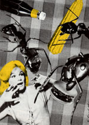

Country Lore
A compendium of successful strategies.
Have drugs, AIDS, the nuclear threat, crime and the troubled economy stopped jockeying for position as the primary threat to the American way of life? You might think so, judging from the content of much of MOTHER'S recent mail. And what's the major menace confronting our readers? Ants.
We must admit this flood of mail on a single subject was prompted by a "Dear Mother" letter published in issue 107, in which Sandy Hawley of Marshall, Texas, asked for help-suggestions on how to control an invasion of ants; a method that didn't involve the use of harmful chemicals. Readers rushed to Sandy's aid with an array of artillery.
To chase ants from inside the house, lots of folks employ vinegar. Used full strength, it can be wiped on counter tops, shelves, base cabinet floors and thresholds-any surface the ants traverse that can't be harmed by the acidic liquid. Or put vinegar into a spray container and spritz wherever ants are likely to hide. If the soil outdoors is dry, you can spray the stuff around entrances to the interior.
Cinnamon sticks placed four feet apart around the perimeter of the house, both indoors and out, as well as sprinklings of ground cinnamon in cracks, have kept ants from a Canadian reader's house for 14 years. Cinnamon is a popular repellent, but so is pepper. There must be quite a turnover on grocery shelves of cayenne pepper, because our mail indicates that it's used extensively on ant invaders. Just dust it along their paths, and they'll soon opt for a detour. One reader grows an extra supply of Capsicum frutescens for this very purpose; she minces the dried peppers and challenges the ants to their own version of walking on hot coals. Then again, the proponents of ground black pepper feel it's every bit as powerful as the red.
Cucumber peelings are another favorite. They're thought to be toxic to ants, and one user said that by regularly replacing the slivers of peel as they dried up, her house was cleared of ants in a week.
Several formulas were also recommended. Foolproof and nontoxic is the claim for this one: Mix 1/4 cup of sugar, 1/2 cup of sorghum molasses and 1 package dry yeast. Portion this into jar lids, and place them where ants have been spotted. Another is to combine 4 ounces of boric acid, 1/2 cup of flour, 1 tablespoon of sugar, 1/8 cup of shortening and enough water to make a paste. Roll bits of this dough into pinhead-sized balls, and place them where ants travel. But don't use this if you have small children or pets.
Instead of chasing ants away, one ingenious soul draws them near. He drops a few spoonfuls of honey into a small plastic bag and leaves it on the floor overnight. There are dozens of prisoners to dispose of (he doesn't say how) in the morning. After about six days of this, the ants know when they've been outwitted, and they depart for good.
One last suggestion for indoor intruders is to shake powdered cleanser on the trails. After the ants have gone (and they will go), the cleanser is easily wiped or vacuumed up. This took care of hundreds of the little pests for one homeowner, who also used it on the patio to foil an army of carpenter ants.
Outdoors, those expanding hills aquiver with determined troops are, as they say, "a whole nother" problem. Quite a few Southern readers swear by grits. They suggest pouring a cup or two on the ground near the anthill. Evidently the hungry soldiers succumb to indigestion and bloating. One of our grits theorists thinks the queen ant becomes too constipated to lay eggs. Regardless of why this attack succeeds, a 10-acre Florida homestead was proclaimed "basically ant-free" after just a few assaults.
One politic reader says to find two anthills, dig a scoopful of ants from each one, and then exchange them, placing each battalion in an enemy camp. This evidently starts a war, and the ants eliminate each other.
Here is a much more benign conclusion reached by a thoughtful landowner. "Some 10 years ago, I purchased 42 acres of forest, in which many of the trees were antinfested. I felt that to preserve the woods, I had to eliminate the ants. I was only 'doing my part.' Since then I've learned that Mother Nature has her own set of checks and balances. Who are we to question her placement of the ant? She assembles all the necessary elements to create the delicate ecosystems covering the earth. Now I leave it to her to let the ants control themselves as long as they are not extreme annoyances. Today the same trees are still infested, but there are lots of brand-new trees growing strong and healthy to take their places. You can see how I've eliminated my ant problem. I've merely changed my mind."
For myself, I prefer this last approach if at all possible. I also prefer to believe a story told about Albert Schweitzer. It seems his house in the African jungle was absolutely overrun with ants, as it had inadvertently been built straddling a main route of the insects' interstate. The benevolent doctor squatted down and addressed the ants: "Now look here," he said. "I'm drawing a chalk line across the floor from one side of the house to the other. I respect your perseverance, your industriousness, your team spirit. But this is my home, not yours. However, realizing you need to get from here to there, you may use the house as a thruway if you march right along this line and don't wander."
The ants seemed to accept his proposition, and they and he coexisted without further confrontation.
|
 |
|
|